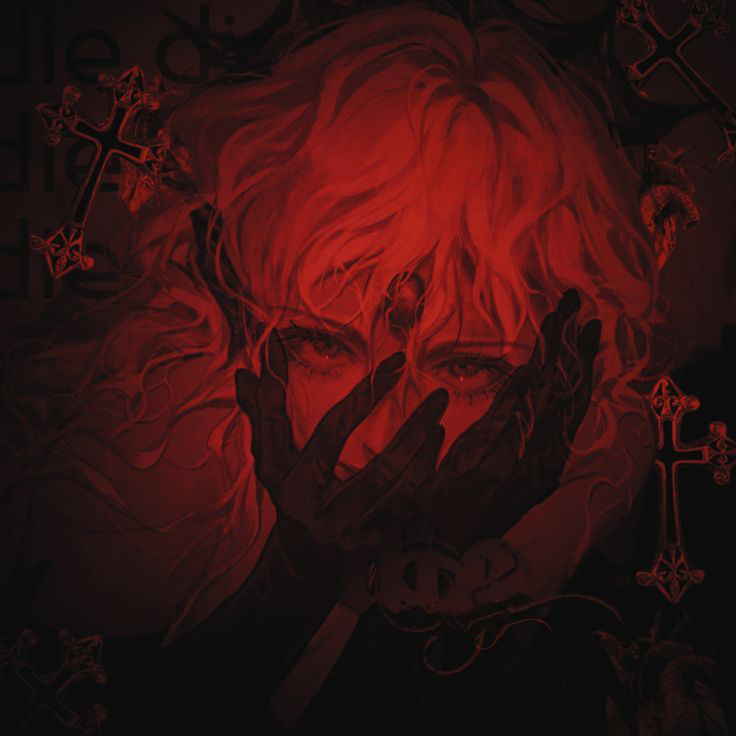

Drael
Just Human
я тебя люблю вероятно
Discord Kopyalandı!
/* === TAM SESSİZ KORUMA === */
// 1. Sağ Tıkı İptal Et (Hiçbir uyarı vermeden)
document.addEventListener('contextmenu', function(e) {
e.preventDefault();
});
// 2. F12, Ctrl+U, Ctrl+Shift+I gibi geliştirici tuşlarını engelle
document.onkeydown = function(e) {
// F12 Tuşu
if(event.keyCode == 123) {
return false;
}
// Ctrl+Shift+I (İncele)
if(e.ctrlKey && e.shiftKey && e.keyCode == 'I'.charCodeAt(0)) {
return false;
}
// Ctrl+Shift+J (Konsol)
if(e.ctrlKey && e.shiftKey && e.keyCode == 'J'.charCodeAt(0)) {
return false;
}
// Ctrl+U (Kaynak Görüntüle)
if(e.ctrlKey && e.keyCode == 'U'.charCodeAt(0)) {
return false;
}
}